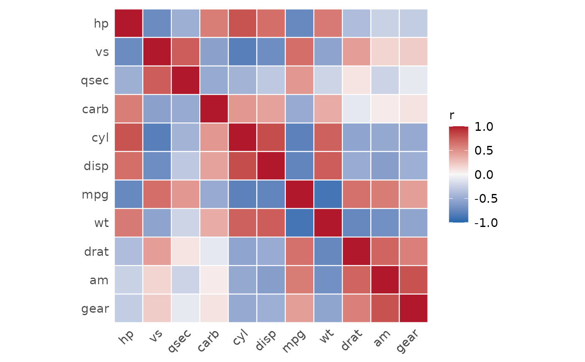
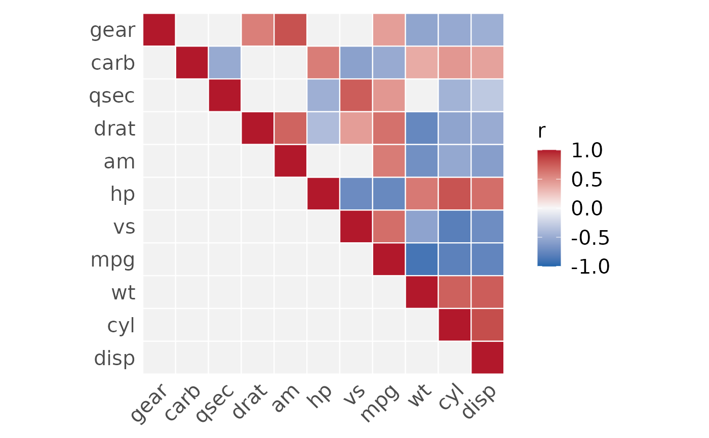
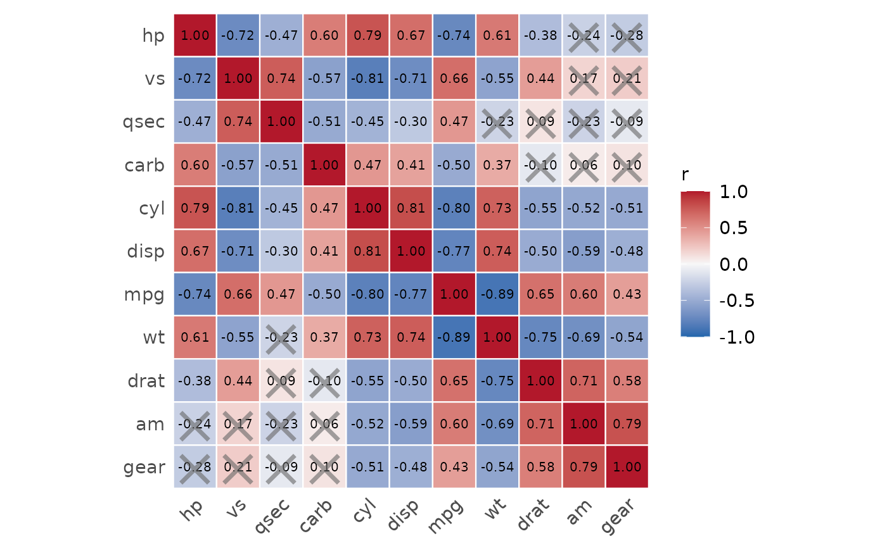
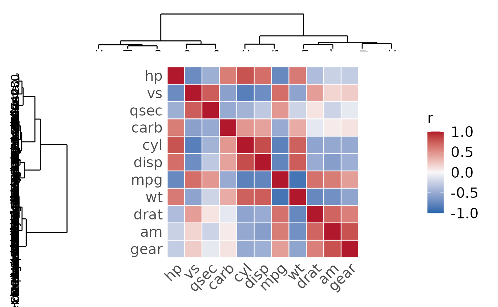

Plot a Correlation Heatmap
plot_heatmap.RdProduces a publication-ready correlation heatmap with optional hierarchical
clustering dendrograms, significance masking, triangle display, and
in-cell coefficient annotations. Internally calls run_correl
and returns a ggplot2 object.
Usage
plot_heatmap(
x,
method = "auto",
out = "all",
sig_threshold = 0.05,
remove = NULL,
theme = "nature",
plot_title = NULL,
plot_subtitle = NULL,
show_rlab = TRUE,
show_clab = TRUE,
top_n = NULL,
bottom_n = NULL,
color = c("#2166AC", "#F7F7F7", "#B2182B"),
clab_angle = 45,
show_triangle = "all",
show_coef = FALSE,
round = 2L,
mark_x = TRUE,
mark_x_size = 1,
mark_x_alpha = 0.6,
show_dend = FALSE,
dend_row_width = 0.2,
dend_col_height = 0.2,
global_font_size = 15,
axis_title_size = NULL,
axis_text_size = NULL,
legend_title_size = NULL,
legend_text_size = NULL,
coef_text_size = NULL,
plot_title_size = NULL,
plot_subtitle_size = NULL,
...
)Arguments
- x
A data frame, tibble, or matrix. Column names may contain special characters.
- method
Correlation method passed to
run_correl. One of"auto"(default),"pearson","spearman","kendall","pointbiserial","phi","cramerv", or"poly".- out
A single character string:
"all"(default; plot all correlations) or"masked"(set non-significant cells toNA).- sig_threshold
Significance threshold passed to
run_correl. Default0.05.- remove
Level-exclusion list passed to
run_correl.- theme
A single character string:
"nature"(default),"classic","minimal", or"bw".- plot_title
A single character string for the plot title. Default
NULL.- plot_subtitle
A single character string for the plot subtitle. Default
NULL.- show_rlab
Logical. Show row labels. Default
TRUE.- show_clab
Logical. Show column labels. Default
TRUE.- top_n
A single positive integer. Plot only the
top_npairs with the highest absolute correlation. Mutually exclusive withbottom_n. DefaultNULL.- bottom_n
A single positive integer. Plot only the
bottom_npairs with the lowest absolute correlation. Mutually exclusive withtop_n. DefaultNULL.- color
A character vector of length 3 specifying fill colours for negative, neutral, and positive correlation respectively. Default
c("#2166AC", "#F7F7F7", "#B2182B").- clab_angle
A single numeric (0–360) controlling the rotation angle of column (x-axis) labels in degrees. Default
45.- show_triangle
A single character string:
"all"(default),"lower"(retain lower triangle only), or"upper"(retain upper triangle only).- show_coef
Logical. Annotate each cell with its rounded correlation coefficient. Default
FALSE.- round
A single non-negative integer. Number of decimal places for coefficient annotation. Default
2. When rounding produces exactly1or-1for a non-unity value, scientific notation is used and the font is reduced. Ignored whenshow_coef = FALSE.- mark_x
Logical. Overlay an
"\u00D7"on non-significant cells whenshow_coef = TRUE. DefaultTRUE.- mark_x_size
A single positive numeric acting as a multiplier for the size of the "×" mark. Default
1.0(fills ~85% of the cell). Ignored whenmark_x = FALSE.- mark_x_alpha
A single numeric (0–1) controlling the transparency of the "×" mark. Default
0.6. Ignored whenmark_x = FALSE.- show_dend
Logical. Whether to attach hierarchical clustering dendrograms to the heatmap margins. Requires patchwork. Default
FALSE.- dend_row_width
A single positive numeric controlling the relative width of the row dendrogram panel when
show_dend = TRUE. Default0.2.- dend_col_height
A single positive numeric controlling the relative height of the column dendrogram panel when
show_dend = TRUE. Default0.2.- global_font_size
A single positive numeric specifying the base font size in points. Default
15.- axis_title_size
Font size for axis titles. Defaults to
global_font_size.- axis_text_size
Font size for axis tick labels. Defaults to
global_font_size.- legend_title_size
Font size for the legend title. Defaults to
global_font_size.- legend_text_size
Font size for legend text. Defaults to
global_font_size.- coef_text_size
Font size for in-cell coefficient annotations. Defaults to
global_font_size * 0.7. Ignored whenshow_coef = FALSE.- plot_title_size
Font size for the plot title. Defaults to
global_font_size + 2.- plot_subtitle_size
Font size for the plot subtitle. Defaults to
global_font_size.- ...
Additional arguments passed to
run_correland, whenshow_dend = TRUE, toplot_dend.
Details
Hierarchical clustering uses Ward's D2 linkage on 1 - |r| as the
dissimilarity to reorder variables before plotting.
When show_dend = TRUE, dendrograms are composed with the heatmap
using patchwork. The row dendrogram is placed to the left and the
column dendrogram above the heatmap. Arguments accepted by
plot_dend (e.g. agglomeration_method,
line_color) are forwarded automatically via ....
Examples
## Basic heatmap
plot_heatmap(mtcars)

## Masked, lower triangle only
plot_heatmap(mtcars, out = "masked", show_triangle = "lower")

## Show coefficients
plot_heatmap(mtcars, show_coef = TRUE, mark_x = TRUE)

## With dendrograms
plot_heatmap(mtcars, show_dend = TRUE)
